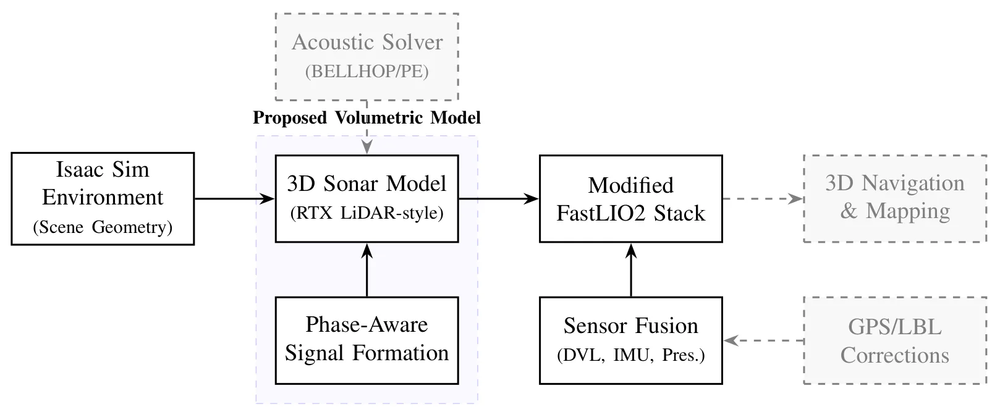
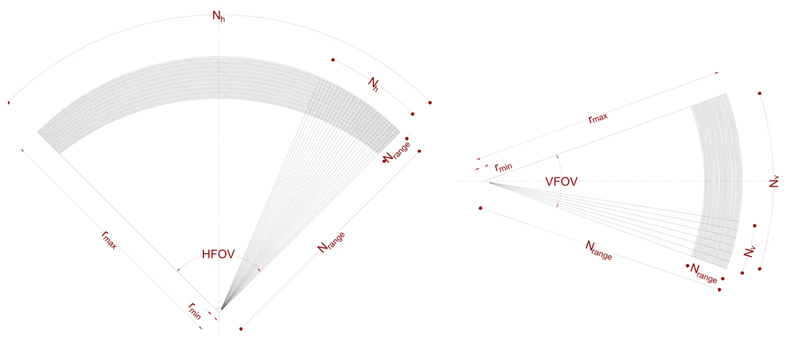
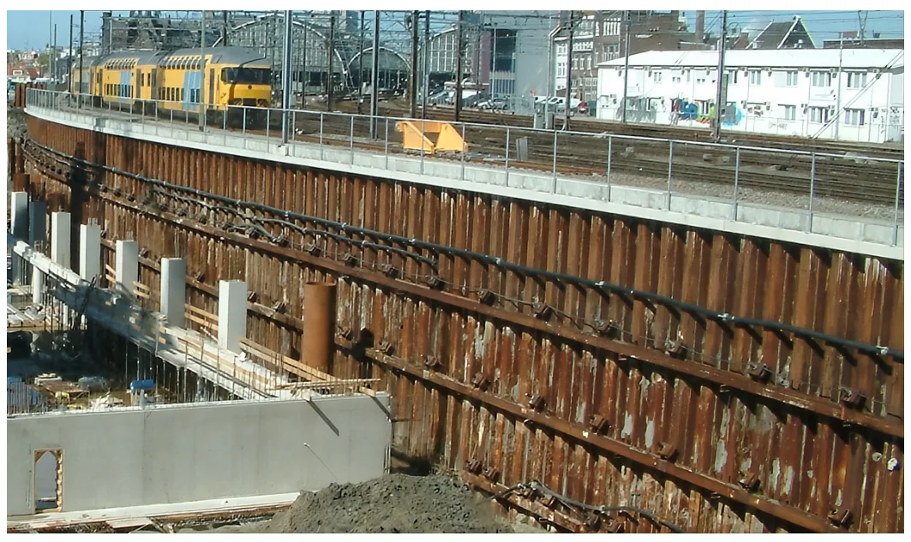
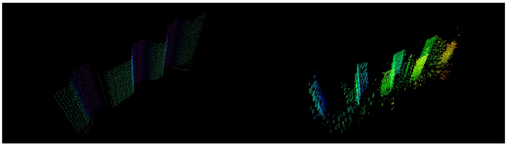

迈向真实感三维声呐仿真Towards Realistic 3D Sonar Simulation
与水下 SLAM、多传感器仿真和 sim-to-real 验证相关，应用专门但方向明确。
一句话工作总结
在 Isaac Sim 中构建更真实的 3D 声呐仿真，并用 FastLIO2 管线验证水下多传感器 SLAM。
摘要
论文提出用于真实 3D 声呐仿真的模块化架构，在 NVIDIA Isaac Sim 中实现类似 Water Linked 3D-15 的体积声呐模型，并将其接入水下仿真框架。系统通过硬件在环方式验证：在 Jetson Orin Nano 上运行改造 FastLIO2 SLAM pipeline，融合合成 3D 声呐、DVL、IMU 和压力数据，并与港口 sheet-pile 检测真实数据做定性对比。
As underwater robotics research increasingly addresses complex 3D perception and autonomous navigation, the fidelity of sonar simulation has become a key factor in algorithm development. Current simulation frameworks typically rely on geometry-driven rendering, approximating 3D sonar as an underwater equivalent to LiDAR, which fails to account for fundamental acoustic phenomena such as refraction, multi-path interference, and phase-dependent signal formation. This paper proposes a modular architecture for realistic 3D sonar simulation that integrates GPU-accelerated graphics engines with physically grounded acoustic propagation principles. We implement a volumetric 3D sonar model within the NVIDIA Isaac Sim environment, modeled after the Water Linked 3D-15 sensor, and integrate it into a comprehensive underwater simulation framework. The system is validated through a hardware-in-the-loop configuration, where a modified FastLIO2 SLAM pipeline, executed on an NVIDIA Jetson Orin Nano, performs sensor fusion using synthetic 3D sonar, DVL, IMU, and pressure data. Finally, a qualitative comparison between simulated outputs and real-world data from harbor sheet-pile inspections is provided, characterizing the remaining sim-to-real gap and establishing a roadmap toward fully acoustics-driven volumetric sensing.
中文解读摘录
图表/页面预览

{kind=link}

{kind=link}

{kind=link}

{kind=link}
